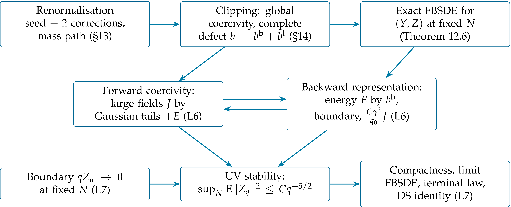

|
Abstract
We prove the central estimate of the construction: bounds, uniform in the lattice, on the error \(Z\) of the approximate forecast and on the time the forecast spends at large fields. The two halves of the FBSDE of Lecture 4 give two inequalities, neither of which closes alone. The forward equation, rewritten as a cubic elliptic equation with memory, is coercive: a convex threshold test bounds the weighted large-field action by Gaussian tails and by the backward energy. The backward equation is linear in \(Z\): a conditional representation formula bounds the backward energy by an integrable bounded-field source, a boundary term, and a small multiple of the large-field action. The small coefficient is \(C \gamma^2 / q_0\), independent of the lattice and of the moment order, so one choice of \(q_0\) closes the loop. The clipping error of Lecture 4 is controlled exactly in this way. We give complete proofs in the scalar (one-site) model, where all the mechanisms are visible with explicit constants, and indicate the changes needed on the lattice.
Introduction 2
How a priori estimates for FBSDEs are usually obtained. 2
14The energies 2
14.1Moments at fixed cutoff 2
14.2Subtracting the Gaussian part 3
14.3Thresholds and energies 3
14.4Two Hardy inequalities 4
Exercises 4
15Forward coercivity 4
15.1The scalar model 4
What the scalar lemma says. 5
15.2The lattice version 6
Exercises 6
16Backward feedback and closure 7
16.1The backward representation 7
16.2Three contributions 7
16.3Closing the loop 8
16.4Consequences 8
Exercises 9
References 9
At the end of Lecture 4 we had, at each lattice cutoff \(N\), the exact system (Theorem 11.6)
where \(Y\) is the approximate forecast built from the explicit action \(\bar{\Gamma}_q\), \(Z = \psi - Y\) is its error, and \(\psi = Y + Z\) is the exact forecast, a martingale. The inputs from Lecture 4 are:
Global coercivity (Lemma 13.1): \(H_q (y)\) is comparable to \((K_q + \gamma y^2)^{- 1}\) and \(\|H_q (y)\|_{p \to p} \le (1 + \varepsilon_q) / q\), \(\varepsilon_q = C (g_q + g_q^2)\).
The source (Proposition 13.2): \(b = b^{\text{b}} + b^{\text{l}}\) with \(\|b^{\text{b}}_q \|_{\infty} \le C \gamma^{7 / 2} q^{- 5 / 2}\) and \(\|b^{\text{l}}_q (y)\|_2^2 \le C \gamma^4 q^{- 5} \|t_q (y)\|_6^6\), where \(t_q (y) = y \mathbb{1}_{|y| > r_q}\).
The coordinate equation (13.5): \(K_q (Y_q + \varrho_q (Y_q)) + \frac{\gamma}{3} Y_q^3 = K_q \Phi_q = P_q\), with a small Lipschitz correction, \(\|D \varrho_q \|_{p \to p} \le \varepsilon_q\).
The goal is to show that \(Z\) is small and that \(Y\) rarely visits large fields, uniformly in \(N\). This is UV stability. Neither equation can be estimated alone: the forward equation contains \(Z\), and the source of the backward equation is controlled by the large fields of \(Y\).
the backward equation is linear in \(Z\), given \(Y\), so it can be solved by a conditional representation formula with an explicit propagator;
the forward equation is, after subtracting the Gaussian part, a cubic elliptic equation at each resolution, which is coercive and can be estimated pathwise;
the two estimates are linked through two weighted energies whose weights are matched.
All estimates below are first proved on a finite interval \([q_0, T]\) and at fixed \(N\). There, everything is finite.
Lemma
Proof. \(P\) has all maximal moments, since \(\nu_N\) has all moments. Global convexity, \(D^2 \bar{\Psi}_q \ge cq\) and \(D \bar{\Psi}_q (0) = 0\), gives \(\|Y_q \| \le C \|P_q \| / q\). Doob's inequality for the martingale \(\psi_q =\mathbb{E}_q \Phi_{\infty}\) gives its maximal moments, and \(Z = \psi - Y\). For the integrands, \(\| \text{Cov}_q \|_{\text{HS}} \le \text{TrCov}_q \le \mathbb{E}_q \| \Phi_{\infty} \|^2\), and \(\|H_q (Y_q)\|_{\text{HS}} \le C \sqrt{\dim H_N} / q\). The energies involve, besides \(Y\) and \(Z\), the Gaussian field \(X\) and \(\varrho_q (Y_q)\); finite-dimensional norm equivalence, \(\| \varrho_q (y)\| \le \varepsilon_q \|y\|\) and Gaussian moments of \(X\) give their moments.\(\Box\)
These constants depend on \(N\) and \(T\). They are used only to justify the absorptions below, never in the final bounds.
The Gaussian part of the forecast is the free field at resolution \(q\) driven by the same innovation,
| \(\displaystyle X_q := \int_{q_0}^q C_s \hspace{0.17em} \mathrm{d} W_s, \qquad \text{Law} (X_q) = \mu^{Q_q} .\) | (14.1) |
This is the formula (4.3) of Lecture 3, but \(W\) is the innovation of the interacting problem; \(X\) is a Gaussian process under the interacting measure. Since \(\mathrm{d} (K_q X_q) = X_q \hspace{0.17em} \mathrm{d} q + \mathrm{d} W_q\),
| \(\displaystyle K_q X_q = W_q + \int_{q_0}^q X_s \hspace{0.17em} \mathrm{d} s.\) | (14.2) |
On the other hand \(P_q = W_q + \int_{q_0}^q \psi_s \mathrm{d} s = W_q +
\int_{q_0}^q (Y_s + Z_s)
\mathrm{d} s\). Insert this into the coordinate
equation (C) and subtract
| \(\displaystyle V_q := Y_q + \varrho_q (Y_q) - X_q, \qquad F^Z_q := \int_{q_0}^q Z_s \hspace{0.17em} \mathrm{d} s,\) | (14.3) |
the noise \(W\) cancels (\(V_q\) is not to be confused with the potentials \(V_t\), \(V_N\) of Lectures 3–4) and we obtain the identity
This is the equation we estimate. At each \(q\) it is the cubic elliptic equation \((q - \Delta) V + \frac{\gamma}{3} (V + X - \varrho)^3 = f\), a nonlinear Helmholtz equation in which the Gaussian field \(X\) enters, up to the small correction \(\varrho\), only as a shift inside the cube, and the right side has a memory. Three remarks:
the memory term has coefficient one: \(\int_{q_0}^q V_s \mathrm{d} s\) is of the same size as the mass term \(qV_q\). It cannot be treated as a forcing; it involves \(V\) itself, and the estimate must absorb it;
the only trace of the backward equation is \(F^Z = \int Z\);
the identity is pathwise: no expectation has been taken.
Define the signed excess of \(V\) over three quarters of the threshold, the large-field part of \(Y\), and the large Gaussian values,
| \(\displaystyle w_q = \text{sgn} (V_q) \left( |V_q | - \tfrac{3}{4} r_q \right)_+, \qquad t_q = Y_q \mathbb{1}_{|Y_q | > r_q}, \qquad \xi_q = X_q \mathbb{1}_{|X_q | > r_q / 32},\) | (14.5) |
all pointwise in space, with \(r_q = (q / \gamma)^{1 / 2}\). The three random energies are
Only thresholded sixth powers are integrated over all scales: \(\mathbb{E} \|X_q \|_6^6 \approx q^{3 / 2}\) for \(2 q_0 \le q \lesssim N^2\), so the unthresholded Gaussian contribution to \(J\) would grow like \(\gamma N^2\), not uniformly in \(N\). The weights are matched to each other and to the source bounds:
quantity
weight
reason
\(\|Z_q \|_2^2\)
\(q^{1 / 2}\)
Hardy: \(\int q^{- 3 / 2} \|F^Z \|^2 \le 16 \int q^{1 /
2} \|Z\|^2\)
\(\gamma \|t_q \|_6^6\)
\(q^{- 3 / 2}\)
source: \(q^{7 / 2} \|b^{\text{l}} \|^2 \le C \gamma^3
\cdot \gamma q^{- 3 / 2}
\|t\|_6^6\)
\(\|b^{\text{l}}_q \|_2^2\)
\(q^{7 / 2}\)
backward propagator \(s / q\) and \(\int_q^{\infty}
s^{- 3 / 2} \mathrm{d} s = 2 q^{- 1 / 2}\)
Lemma
Proof. Write \(q^{- 1} \int_0^q f_s \mathrm{d} s = \int_0^1 f_{q \theta} \mathrm{d} \theta\) and apply Minkowski's inequality. For the first bound, the substitution \(u = q \theta\) gives \(\|f_{\cdot \theta} \|_{L^4 (q^{- 1 / 2} \mathrm{d} q)} = \theta^{- 1 / 8} \|f\|_{L^4 (q^{- 1 / 2} \mathrm{d} q)}\), and \(\int_0^1 \theta^{- 1 / 8} \mathrm{d} \theta = \frac{8}{7}\). For the second, the left side is \(\|q^{- 1} \int_0^q f\|^2_{L^2 (q^{1 / 2} \mathrm{d} q)}\), \(\|f_{\cdot \theta} \|_{L^2 (q^{1 / 2} \mathrm{d} q)} = \theta^{- 3 / 4} \|f\|_{L^2 (q^{1 / 2} \mathrm{d} q)}\), and \((\int_0^1 \theta^{- 3 / 4} \mathrm{d} \theta)^2 = 16\).\(\Box\)
The first inequality will estimate the memory term of
Exercise
Exercise
On one site the Laplacian disappears. We also drop the small Lipschitz
correction \(\varrho\) (restored in Proposition 15.3) and
allow an arbitrary continuous \(X\), thinking of one site of the
lattice, where \(\text{Var} X_q \approx \sqrt{q}\). Then
Lemma
| \(\displaystyle qv_q + \frac{\gamma}{3} (v_q + X_q)^3 = \int_{q_0}^q v_s \hspace{0.17em} \mathrm{d} s + f_q, \qquad q \in [q_0, T] .\) | (15.1) |
Define \(r_q\), \(w_q\), \(\xi_q\) as in
Moreover the large-field part \(t_q = (v_q + X_q) \mathbb{1}_{|v_q + X_q | > r_q}\) satisfies \(|t_q | \le \frac{32}{7} (|w_q | + | \xi_q |)\).
Proof. Step 1: test with \(w^3\).
Multiply
Mass. \(qv_q w_q^3 = q|w_q |^4 + \frac{3}{4} qr_q |w_q |^3\).
Cube. \(|X_q | \le \frac{r_q}{32} + | \xi_q |\), so \(\text{sgn} (w_q) (v_q + X_q) \ge |w_q | + \frac{23}{32} r_q - | \xi_q | \ge |w_q | + \frac{11}{16} r_q - | \xi_q |\) (we give up \(\frac{1}{32} r_q\) to leave room, on the lattice, for the shift \(\| \varrho^0_q \|_{\infty} \le \varepsilon_q r_q\), \(\varepsilon_q \le \frac{1}{32}\)). Since the cube is increasing (also if the right side is negative),
by the elementary inequality
Memory. Since \(|v_s - w_s | \le \frac{3}{4} r_s\) and \(\int_{q_0}^q r_s \mathrm{d} s \le \frac{2}{3} qr_q\),
The first term, \(\frac{1}{2} qr_q |w_q |^3\), is absorbed by the second mass term \(\frac{3}{4} qr_q |w_q |^3\); the leftover \(\frac{1}{4} qr_q |w_q |^3 \ge 0\) is dropped here, and is used on the lattice to absorb the memory of \(\varrho^0\).
Forcing. By Young's inequality \(w_q^3 f_q \le \frac{\gamma}{48} w_q^6 + \frac{12}{\gamma} f_q^2\).
Step 2: integrate. Collecting, at every \(q\),
Multiply by \(q^{- 3 / 2}\) and integrate over \([q_0, T]\). With \(A = \int_{q_0}^T q^{- 1 / 2} w_q^4 \mathrm{d} q\), Hölder and the first Hardy inequality (with \(w\) extended by zero outside \([q_0, T]\)) give
Since \(\frac{5}{4} - \frac{8}{7} = \frac{3}{28}\),
Lemma
Proof. \(\frac{1}{4} x^3 + 64 \rho^3 - 3 x^2 \rho = \frac{1}{4} (x - 8 \rho)^2 (x + 4 \rho) \ge 0\), so \((x - \rho)^3 \ge x^3 - 3 x^2 \rho - \rho^3 \ge \frac{3}{4} x^3 - 65 \rho^3\). Apply it with \(x = u + \frac{11}{16} r\): \(\frac{1}{3} u^3 (x - \rho)^3 \ge \frac{1}{4} u^3 x^3 - \frac{65}{3} u^3 \rho^3\), and \(u^3 x^3 \ge u^6 + 3 (\frac{11}{16})^2 r^2 u^4\) with \(\frac{3}{4} (\frac{11}{16})^2 = \frac{363}{1024} > \frac{1}{4}\). Finally \(\frac{65}{3} u^3 \rho^3 \le \frac{1}{6} u^6 + \frac{4225}{6} \rho^6\), since \(\frac{1}{6} (u^3 - 65 \rho^3)^2 \ge 0\), and \(\frac{1}{4} - \frac{1}{6} = \frac{1}{12}\).\(\Box\)
Proposition
| \(\displaystyle J_T \le C \hspace{0.17em} (G_T + E_T), \qquad \|G_T \|_{L^p (\mathbb{P})} \le C \gamma^3 p^5 \quad (p \ge 1),\) | (15.4) |
with \(C\) independent of \(N\), \(T\) and \(p\).
Proof: the changes from the scalar case. Test
The Laplacian. \(\langle w^3, - \Delta_N V \rangle \ge 0\). Indeed \(w^3 = \phi' (V)\) for the convex function \(\phi (v) = \frac{1}{4} (|v| - \frac{3}{4} r)_+^4\), and for any nondecreasing \(\phi'\),
summing over unordered nearest-neighbour pairs. So the elliptic term only helps.
The coordinate correction. Split \(\varrho_q (y) = \varrho^0_q + \varrho^1_q\) according to \(|y| \le r_q\) or not (writing \(\varrho_q (y) = \textsf{L}_q (y) y\) with \(\textsf{L}\) the averaged derivative). Then \(\| \varrho^0_q \|_{\infty} \le \varepsilon_q r_q\) shifts the threshold by a small amount, and \(\| \varrho^1_q \|_j \le \varepsilon_q \|t_q \|_j\), \(j = 4, 6\). If \(\varepsilon_q \le \frac{1}{32}\), then \(|Y| \le |w| + \frac{13}{16} r_q + | \xi | + | \varrho^1 |\); on \(\{|Y| > r_q \}\) this gives \(\frac{3}{16} |Y| \le |w| + | \xi | + | \varrho^1 |\), so \(\|t_q \|_j \le \frac{16}{3} (\|w_q \|_j +\| \xi_q \|_j + \varepsilon_q \|t_q \|_j)\), and for small \(\varepsilon\)
This also supplies the \(t\) part of \(J_T\). These are operator bounds: \(\varrho\) is nonlocal, but small in every \(L^p\). In the cube the error is \(\rho = | \xi | + | \varrho^1 |\), and the cube error \(\frac{4225}{6} \gamma \| \rho \|_6^6\) is at most \(C \gamma (\| \xi_q \|_6^6 + \varepsilon_q^6 \|w_q \|_6^6)\): the \(w\) part is absorbed for small \(\varepsilon\), the \(\xi\) part goes into \(G_T\). The memory of \(\varrho^0\) costs at most \(\frac{2}{3} (\sup_s \varepsilon_s) \hspace{0.17em} qr_q \|w_q \|_3^3\) and is absorbed by the spare \(\frac{1}{4} qr_q \|w_q \|_3^3\) when \(\sup_s \varepsilon_s < \frac{3}{8}\) (automatic, since \(\varepsilon \le \frac{1}{32}\)); the memory of \(\varrho^1\) costs \(C \sup_q \varepsilon_q \hspace{0.17em} (A + G_T)\), with \(A = \int_{q_0}^T q^{- 1 / 2} \|w_q \|_4^4 \mathrm{d} q\), by Hölder, Hardy and Young, and is absorbed by the spare \(\frac{3}{28}\) if \(C \sup_q \varepsilon_q < \frac{3}{56}\); the subtraction is legitimate because \(A < \infty\) pathwise at fixed \(N, T\), by continuity on \([q_0, T]\). All are deterministic smallness conditions on \(g_{q_0}\), independent of \(p\).
The backward forcing. \(| \langle w^3, F^Z \rangle | \le \frac{\gamma}{48} \|w\|_6^6 + \frac{12}{\gamma} \|F^Z \|_2^2\), and by the second Hardy inequality \(\gamma^{- 1} \int q^{- 3 / 2} \|F^Z_q \|_2^2 \mathrm{d} q \le 16 \hspace{0.17em} E_T\).
Gaussian tails. \(X_q (x)\) is centred Gaussian with variance \(\int_{q_0}^q a_2 \le C \sqrt{q}\), while the threshold is \(r_q / 32 = \frac{1}{32} (q / \gamma)^{1 / 2}\). By Minkowski's inequality in \(x\) and translation invariance of \(\text{Law} (X_q)\), \(| \| \xi_q \|_j^j |_{L^p (\mathbb{P})} \le | | \xi_q (0) |^j |_{L^p (\mathbb{P})}\), and by Hölder, for \(j = 4, 6\),
and integrating in \(q\) with \(u = \sqrt{q} / (p \gamma)\) gives \(\|G_T \|_p \le C \gamma^3 p^5\).\(\Box\)
No information on the interacting field has been used, apart from the equation itself: the Gaussian tails are tails of the free field \(X\), which is Gaussian under the interacting measure because it is built from the innovation.
Exercise
Exercise
Exercise
The backward equation in
| \(\displaystyle \partial_s \mathscr{P}_{q, s} = \mathscr{P}_{q, s} H_s (Y_s), \qquad \mathscr{P}_{q, q} = I, \qquad s \ge q.\) | (16.1) |
By (A), \(\| \mathscr{P}_{q, s} \|_{2 \to 2} \le \exp \int_q^s \frac{1 + \varepsilon_u}{u} \mathrm{d} u \le L_0 \hspace{0.17em} \frac{s}{q}\), with \(L_0 = \exp (\int_{q_0}^{\infty} \varepsilon_u \frac{\mathrm{d} u}{u}) \le \exp (C (g_{q_0} + g_{q_0}^2))\).
Proof. By the product rule and
So \(Z\) is the expected source accumulated on the unresolved scales, transported back to \(q\), plus the boundary error. This is the conditional-expectation form of a backward equation, as in \(F_t =\mathbb{E}_t [F_T]\) for the force (Theorem 5.4); here the source is the defect.
Split \(Z = Z^{\text{t}} + Z^{\text{b}} + Z^{\text{l}}\) according to the terminal term and the two parts of the source. We estimate each in the scalar manner: norms of the propagator times norms of the source.
Bounded fields. By (B),
This is where the two correction steps of Lecture 4 are used: with one step the source would be \(O (s^{- 2})\) and the first integral would diverge logarithmically.
Boundary. \(q \|Z^{\text{t}}_q \|_2 \le L_0 \hspace{0.17em} \mathbb{E}_q \|TZ_T \|_2\), so, with \(\delta_{N, T, p} := \|TZ_T \|^2_{L^{2 p} (\mathbb{P}; L^2)}\),
At fixed \(N\), \(\delta_{N, T, p} \to 0\) as \(T \to \infty\) (Lemma 17.1).
Large fields. Let \(A^{\text{l}} := \int_{q_0}^T s^{7 / 2} \|b^{\text{l}}_s (Y_s)\|_2^2 \mathrm{d} s \le C \gamma^4 \int s^{- 3 / 2} \|t_s \|_6^6 \le C \gamma^3 J_T\) by (B). By Cauchy–Schwarz in \(s\),
so that, by Jensen's inequality, \(\|Z^{\text{l}}_q \|_2^2 \le 2 L_0^2 q^{- 5 / 2} \hspace{0.17em} \mathbb{E}_q A^{\text{l}}\). Integrating, and using that \(\mathbb{E}_q\) is a contraction on \(L^p (\mathbb{P})\),
This is how the clipping error is controlled. The large-field source \(b^{\text{l}}\) is not small; but its squared \(L^2\) norm is controlled by the sixth power of the large-field part, \(\|b^{\text{l}}_q \|_2^2 \le C \gamma^4 q^{- 5} \|t_q \|_6^6\) (B), and after transport by the propagator and integration with the energy weight it contributes to the backward energy only through \(J_T\), with the small factor \(\gamma^2 / q_0\).
Proposition
| \(\displaystyle \|E_T \|_{L^p} \le C \gamma^6 q_0^{- 3 / 2} + C \gamma^{- 1} q_0^{- 1 / 2} \hspace{0.17em} \delta_{N, T, p} + C \gamma^2 q_0^{- 1} \|J_T \|_{L^p},\) | (16.3) |
with \(C\) independent of \(N\), \(T\) and \(p\).
Proof. \(\|Z\|^2 \le 3 (\|Z^{\text{t}} \|^2 +\|Z^{\text{b}} \|^2 +\|Z^{\text{l}} \|^2)\) and the three estimates above.\(\Box\)
Theorem
Proof. Let \(x = \|E_T \|_p\) and \(y = \|J_T \|_p\). By Propositions 15.3 and 16.2,
with \(A_0, B_0, B_1\) and the constant in \(\eta\) independent of \(N, T, p\), and bounded for all \(q_0\) beyond the thresholds already required. Choose \(q_0\) such that also \(A_0 \eta \le \frac{1}{2}\). Then \(y \le A_0 (C \gamma^3 p^5 + B_0 + B_1 \delta_{N, T, p}) + \frac{1}{2} y\). Since \(y < \infty\) by Lemma 14.1, it can be absorbed, and \(x\) follows.\(\Box\)
The structure of the argument is the point:

Forward coercivity estimates the large fields using the backward energy; the backward representation returns that energy with a small coefficient. Neither half closes on its own. The smallness is in the feedback, \(\gamma^2 / q_0\), not in the coupling of either equation, and it is independent of the moment order, so a single \(q_0\) closes the loop for every \(p\). The growth \(p^5\) is then inherited from the Gaussian tails \(G_T\), and gives stretched exponential moments \(\mathbb{E} \exp \{c (E_{\infty} + J_{\infty})^{1 / 5} \} < \infty\) once the boundary term is removed. Note that \(\gamma^2 / q_0 = g_{q_0}^2\).
The boundary term \(\delta_{N, T, p}\) is removed in Lecture 6, at each fixed \(N\), by letting \(T \to \infty\). Assuming this for the moment, we obtain
| \(\displaystyle \sup_N \|E^N_{\infty} \|_{L^p} + \sup_N \|J^N_{\infty} \|_{L^p} \le C_{\gamma} (1 + p^5), \qquad \sup_N \mathbb{E} \|Z^N_q \|_2^2 \le C_{\gamma} q^{- 5 / 2} .\) | (16.5) |
The second bound follows from the representation formula on \([q, \infty)\): the three contributions are, up to the factor \(3\), \(O (q^{- 3})\), \(0\) and, by the computation above, \(2 L_0^2 q^{- 5 / 2} \mathbb{E}A^{\text{l}}\). So the approximate forecast differs from the exact one by \(O (q^{- 5 / 4})\) in \(L^2 (\mathbb{P}; L^2)\) (root mean square), uniformly in the lattice. Since \(\|H_q \| \le C / q\), the coupling term \(H_q Z_q\) in the forward equation is \(O (q^{- 9 / 4})\) in \(L^2 (\mathbb{P}; L^2)\), integrable in \(q\): the forward equation is, up to an integrable drift, the explicit SDE \(\mathrm{d} Y = b (Y) \mathrm{d} q + H (Y) \mathrm{d} W\).
Remark
Exercise
In which sense do large fields make the backward equation more contractive? Redo the three estimates of Section 16 on one site.
Exercise
Exercise
N. Barashkov, M. Gubinelli. A variational method for \(\Phi^4_3\). Duke Math. J. 169 (2020), 3339–3415.
M. Gubinelli. The massive \(\Phi^4_3\) field through forward–backward equations. Course notes, October 2026.
J. Ma, J. Yong. Forward-Backward Stochastic Differential Equations and their Applications. Lecture Notes in Math. 1702, Springer, 1999.